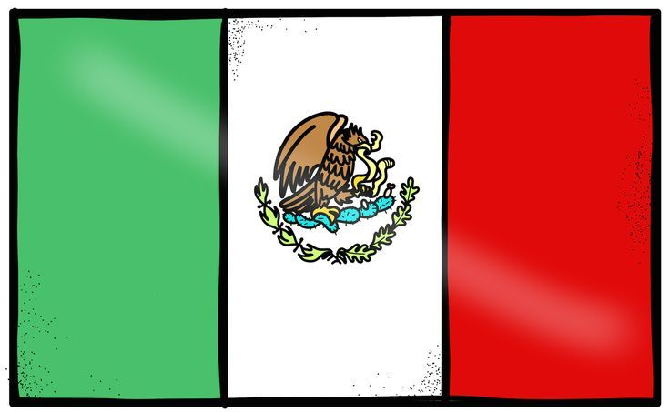

Septiembre es reconocido como el Mes Patrio en México porque condensa en solo cuatro semanas los momentos más cruciales para la soberanía, la defensa territorial y la consolidación de la nación. Más allá de un único día festivo, el calendario de este mes reúne el inicio y el fin de la lucha independentista, junto con pasajes de heroísmo cívico que estructuran la identidad nacional.
El inicio de la gesta independentista (15 y 16 de septiembre)
El núcleo de la celebración es la madrugada del 16 de septiembre de 1810, cuando Miguel Hidalgo y Costilla convocó al pueblo en Dolores, Guanajuato, a levantarse en armas contra el régimen virreinal. La conmemoración inicia popularmente la noche del 15 con la ceremonia del "Grito" y continúa el 16 con el desfile militar, simbolizando la voluntad popular de construir un país libre.
La consumación de la soberanía (27 y 28 de septiembre)
México no solo festeja el comienzo de su movimiento, sino también su culminación. Tras 11 años de guerra, el 27 de septiembre de 1821 el Ejército Trigarante, liderado por Agustín de Iturbide y Vicente Guerrero, entró triunfante a la Ciudad de México para decretar el fin del dominio español. Al día siguiente, 28 de septiembre, se redactó y firmó el Acta de Independencia del Imperio Mexicano.
La defensa de la patria (13 de septiembre)
El mes incluye el homenaje a la resistencia militar frente a las intervenciones extranjeras. El 13 de septiembre de 1847 se conmemora la batalla del Castillo de Chapultepec durante la guerra contra Estados Unidos, en la que cayeron los cadetes del Colegio Militar conocidos como los Niños Héroes, cuya gesta quedó grabada como un símbolo de lealtad al territorio nacional.
El legado ideológico y la tradición (30 de septiembre)
El ciclo histórico cierra el 30 de septiembre con el natalicio de José María Morelos y Pavón (1765), líder insurgente y autor de los Sentimientos de la Nación, documento base para la división de poderes y la abolición de la esclavitud en el país.
NOMBRE : LOZANO LINARES MARCO ANTONIO
NO.CONTROL : 0587
SEMESTRE: 4TO SEMESTRE | GRUPO : 4*I
ESPECIALIDAD : PROGRAMACION